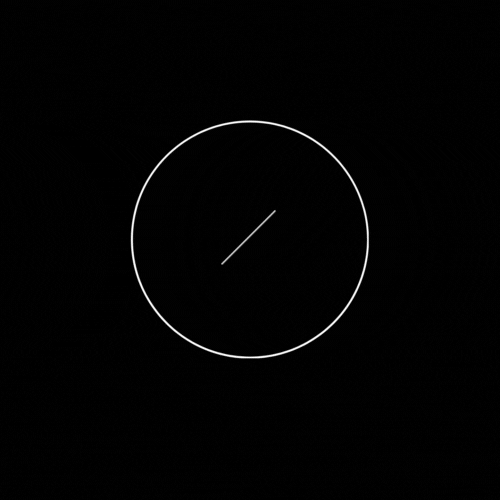

STUDIO TATTOO
ABOUT US
Estudio de tatuaje, ubicado en Nuñez, en la Ciudad de Buenos Aires, desde el 2015. Somos un estudio artistico con cinco profesionales del arte del tattoo. Nos especializamos en estilos tradicionales, neotradicionales, black and grey, oldschool y micro-realismo. Realizamos diseños distintos para cada tatuaje, creando obras unicas para cada cliente. Trabajamos con tintas aptas para la piel y films dermicos para una adecuada cicatrizacion. Realizamos tambien un seguimiento del tatuaje estando en contacto con vos una vez realizado para un mejor cuidado y resultado.